Нескінченна дошка для графічного планшета
Пишіть пером як на папері, кресліть транспортиром і циркулем, набирайте формули й будуйте за ними графіки. Без акаунта, без інтернету, і жоден рядок не загубиться, навіть коли зникне світло.
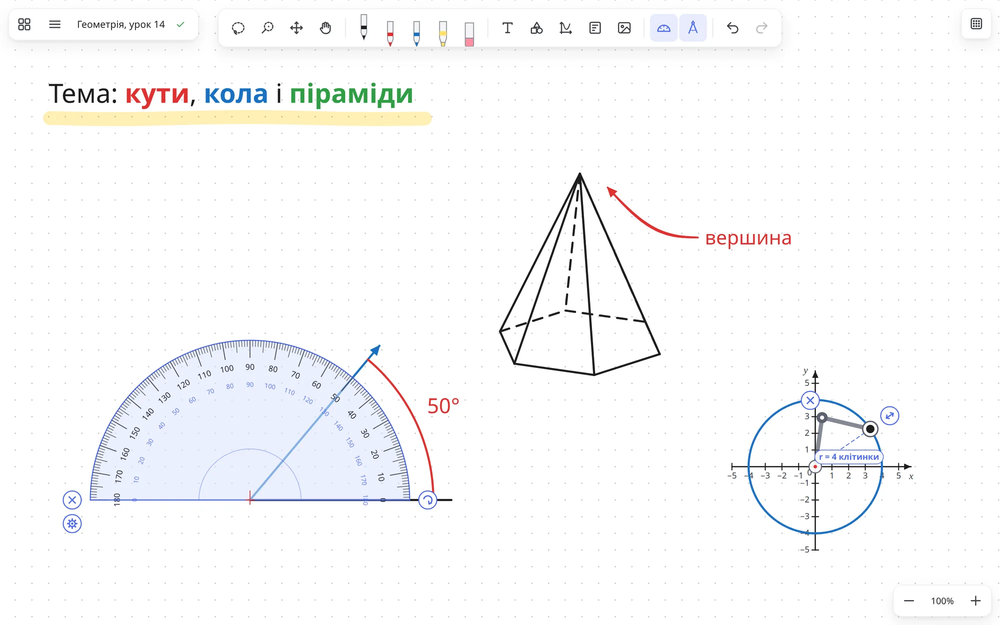
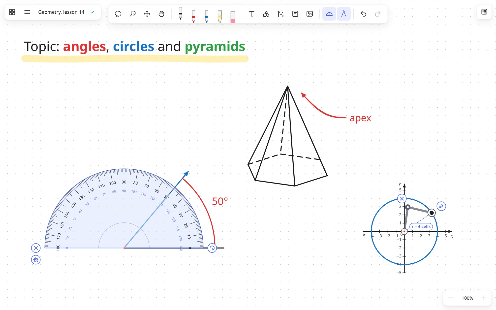
Приклади
Як це виглядає
Справжні знімки екрана Inkboard, без монтажу.
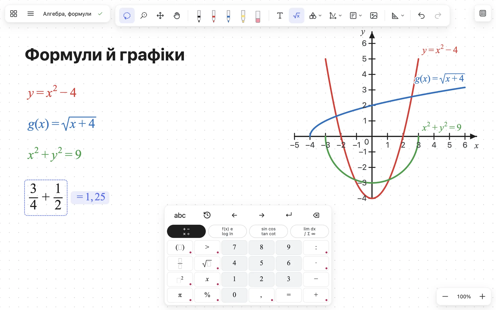
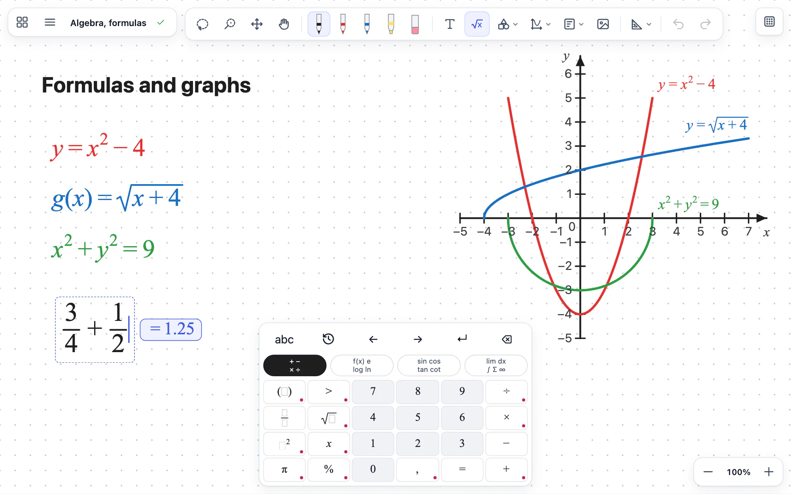
Формули й графіки за ними
Набирайте дроби, корені й степені на клавіатурі формул, і Inkboard порахує відповідь. Виділіть формули, і вони стануть графіками: функції, рівняння на зразок кола, з обмеженнями по x і по y.
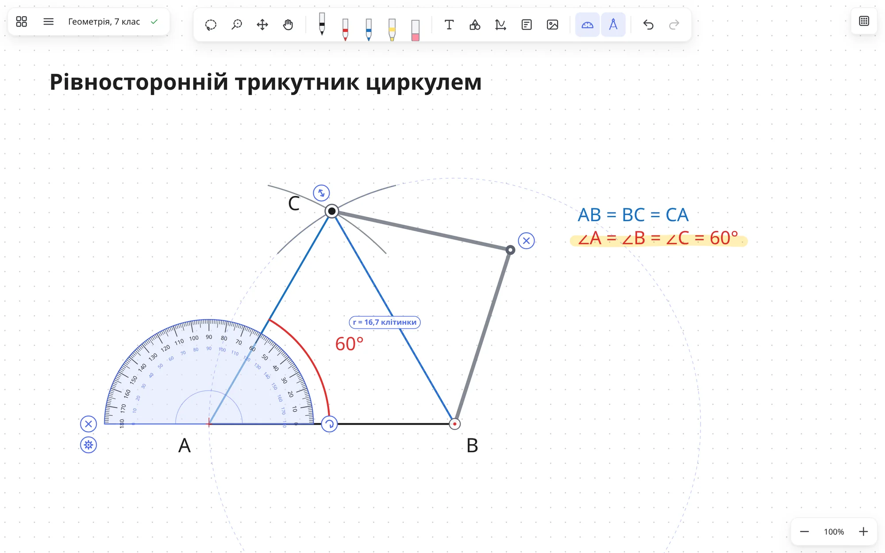
Транспортир і циркуль
Транспортир сам підписує градуси дуги, циркуль креслить кола й дуги потрібного радіуса. Обидва крутяться й перетягуються пером.
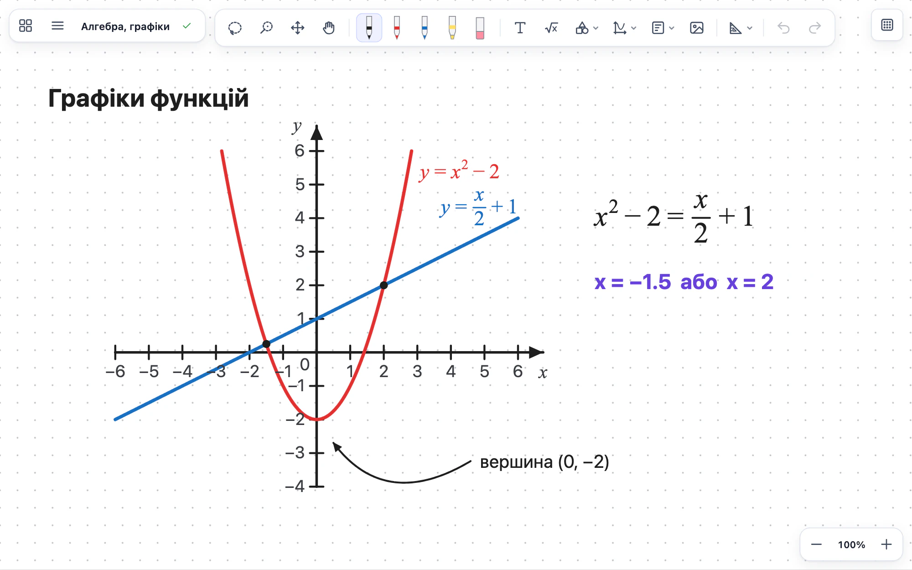
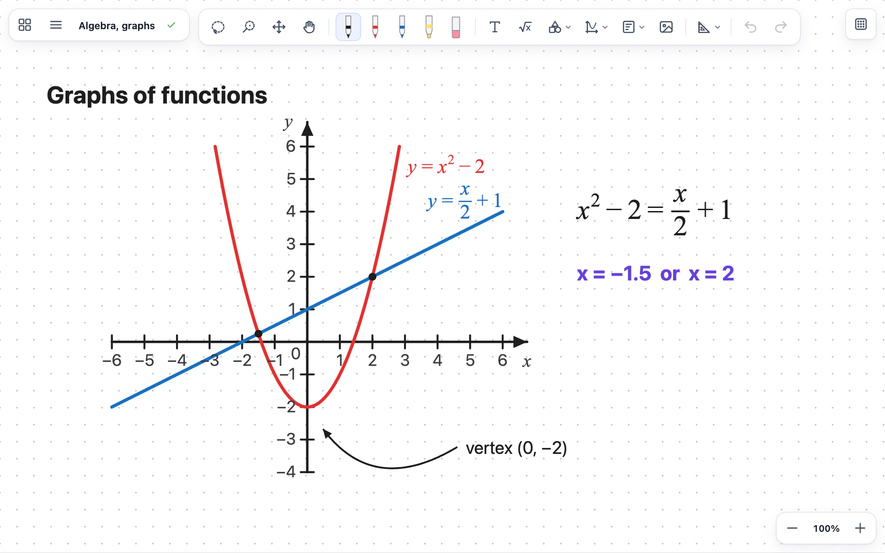
Координати й графіки
Впишіть формулу, і графік з’явиться на площині разом із підписом. Є також числова пряма й осі x, y, z.
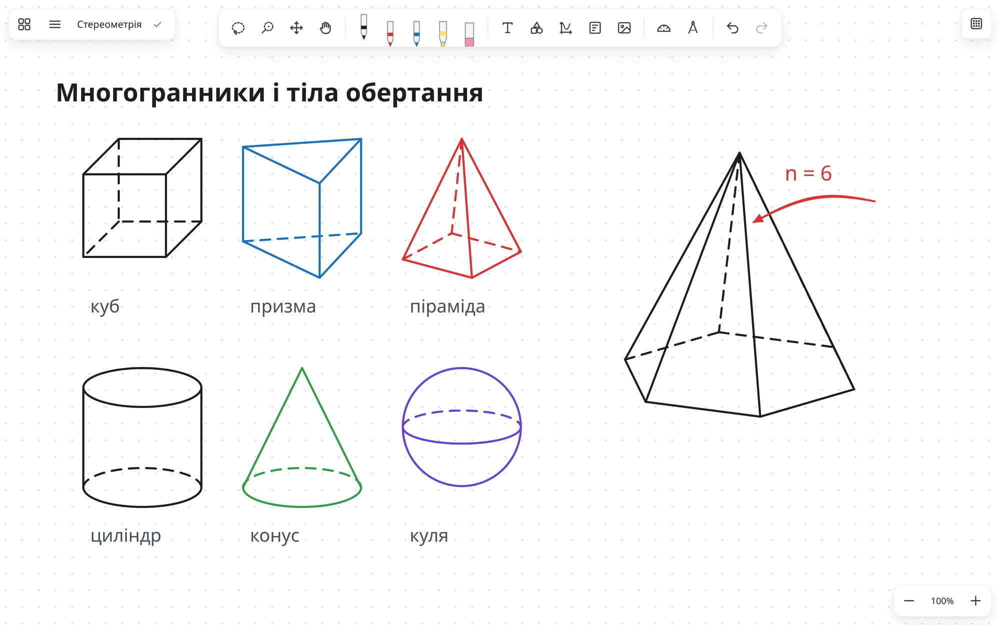
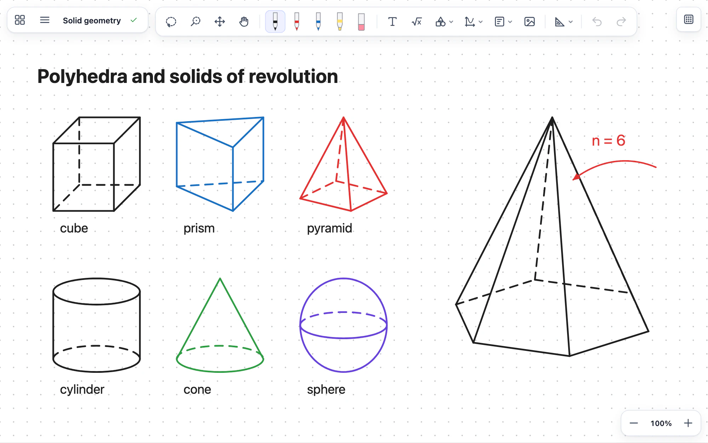
Призми, піраміди, тіла обертання
Невидимі ребра малюються пунктиром. Кількість кутів основи можна змінити будь-коли.
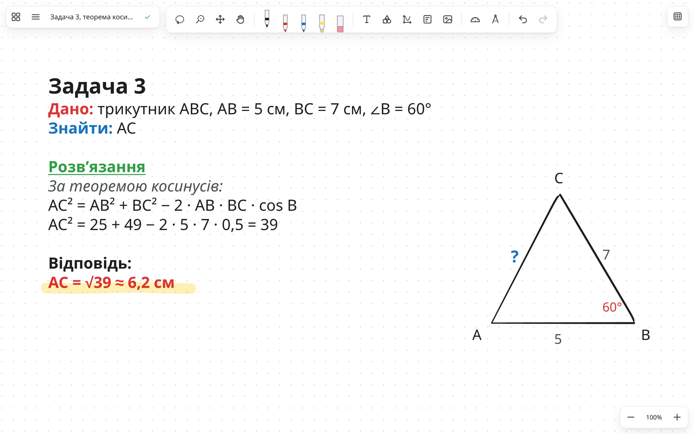
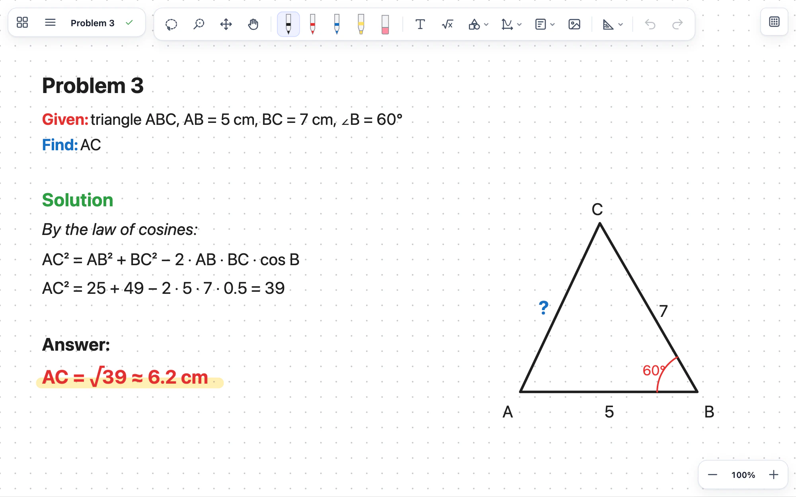
Текст із форматуванням
Друкуйте прямо на дошці. Окремі слова можна зробити жирними, курсивом, іншого кольору чи розміру.
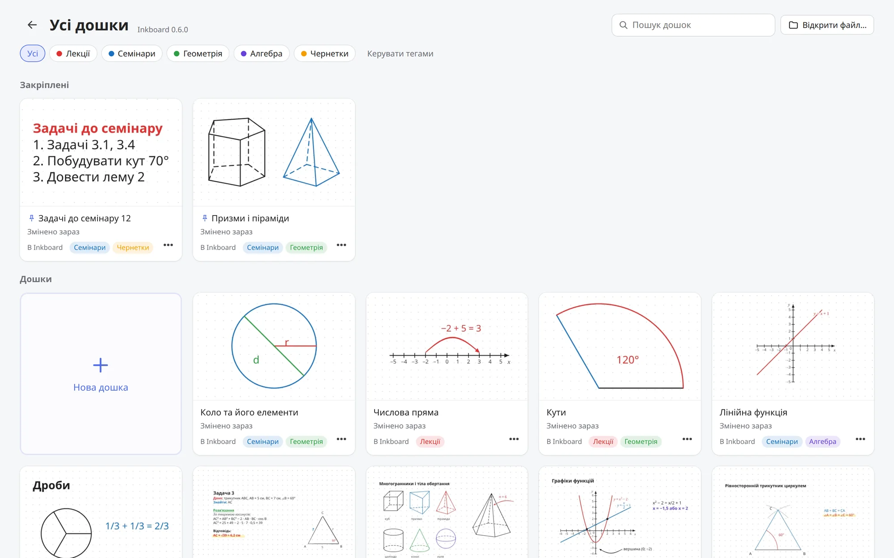
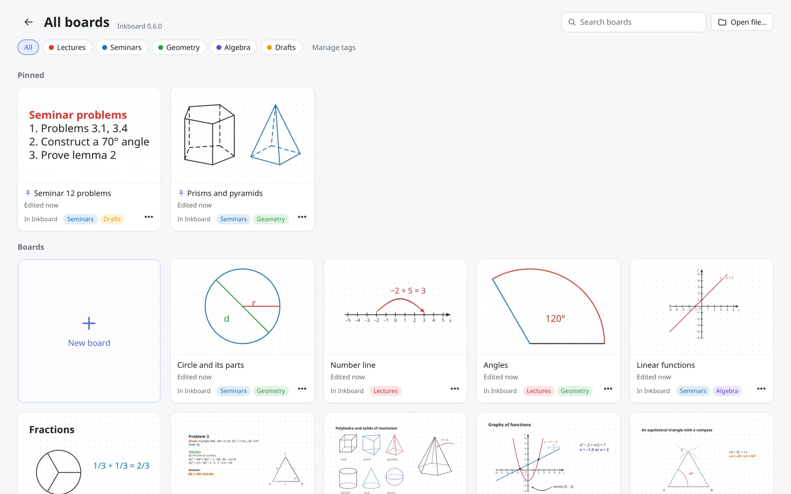
Усі дошки
Прев’ю кожної дошки, кольорові теги для предметів і тем, пошук, закріплені дошки й кошик на 30 днів.
Можливості
Зроблено для пера, а не для мишки
Для пояснень, лекцій, конспектів і чернеток: усе, що зручніше показати рукою, ніж мишкою.
Перо з натиском
Сильніше тиснете, товща лінія. Лінії векторні й лишаються різкими за будь-якого збільшення, а долоня на екрані не малює.
Wacom та інші планшети
Гумка на зворотному кінці пера, бічні кнопки й ExpressKeys. Гарячі клавіші працюють на будь-якій розкладці.
Клавіатура формул
Дроби, корені, степені, тригонометрія й інтеграли. Відповідь з’являється, коли попросите. Формули стають графіками з обмеженнями по x і y, і графік сам підлаштовує осі.
Знайти: …
Розв’язання:
Шаблони
Збережіть будь-що один раз і вставляйте в будь-яку дошку.
Картинки й скриншоти
Вставляйте з буфера або просто перетягніть файл на дошку.
Виділення, групи, замок
Ласо або пензель для виділення. Замок береже важливе від випадкового стирання.
Українською та англійською
Інтерфейс обома мовами, перемикається в налаштуваннях.
Експорт у PNG і PDF
Поділіться конспектом або надрукуйте його. Без акаунта й без хмари: дошки лишаються на вашому комп’ютері.
Надійність
Світло зникло, а дошка лишилась
Кнопки «Зберегти» немає, бо вона не потрібна. Inkboard записує кожну дошку на диск сам, безпечно, і тримає попередні версії.
щонайбільше до запису на диск, навіть поки ви малюєте
крок історії версій: можна повернутися до будь-якої
дошки лежать у кошику, перш ніж зникнуть
напівзаписаних файлів: попередня версія завжди поруч
Перевірено висмикуванням шнура з розетки. Резервну копію можна тримати на флешці або в Google Drive / OneDrive.
Завантаження
Встановіть за хвилину
Безкоштовно, без реєстрації. Оберіть свою систему: тут файл, перший запуск і як приходять оновлення.
Windows
Windows 10 або 11, 64-біт
Завантажити .exeЧому з’являється попередження і чи це безпечно?
Windows і macOS довіряють програмам із платним підписом розробника. В Apple це 99 $ на рік, сертифікат для Windows коштує сотні доларів на рік. Inkboard безкоштовний, тому поки що без підпису. Попередження означає «розробник не платив за підпис», а не «знайдено вірус».
- Увесь код відкритий: github.com/yaroslavyushchenko/inkboard.
- Файли для завантаження публічно збирає GitHub Actions прямо з цього коду.
- Програма не збирає даних і виходить в інтернет лише щоб перевірити оновлення на GitHub.
Нова версія завантажується у фоні й встановлюється, коли ви перезапустите програму.
Перший запуск
- Запустіть файл. Якщо з’явиться синє вікно, натисніть Докладніше.Windows захистив ваш ПКДокладніше
- Натисніть Усе одно запустити. Далі звичайне встановлення.Windows захистив ваш ПКУсе одно запустити
macOS
macOS 12 або новіша, Intel і Apple Silicon
Завантажити .dmgЧому з’являється попередження і чи це безпечно?
Windows і macOS довіряють програмам із платним підписом розробника. В Apple це 99 $ на рік, сертифікат для Windows коштує сотні доларів на рік. Inkboard безкоштовний, тому поки що без підпису. Попередження означає «розробник не платив за підпис», а не «знайдено вірус».
- Увесь код відкритий: github.com/yaroslavyushchenko/inkboard.
- Файли для завантаження публічно збирає GitHub Actions прямо з цього коду.
- Програма не збирає даних і виходить в інтернет лише щоб перевірити оновлення на GitHub.
Поки що macOS не дає програмі без підпису Apple оновитися самій. Inkboard покаже «Є нова версія»: завантажте новий .dmg і замініть програму. Дошки нікуди не зникнуть, а macOS може ще раз попросити дозвіл.
Перший запуск: один раз дозволити
- Відкрийте .dmg і перетягніть Inkboard у Програми.
- Відкрийте Inkboard. macOS скаже, що не може перевірити програму. Натисніть Готово.Готово…
- Відкрийте Системні параметри → Приватність і безпека.Приватність і безпека
- Унизу біля повідомлення про Inkboard натисніть Усе одно відкрити і введіть пароль.Усе одно відкрити
Linux
64-біт (x86_64)
Завантажити .AppImageAppImage оновлюється сама, Snap оновлює Snap Store. Для .deb Inkboard покаже «Є нова версія»: завантажте новий файл і відкрийте.
Перший запуск
- AppImage: у Властивостях файлу дозвольте запуск як програми.Дозволити запуск як програми
- Відкрийте файл. Нічого доставляти не треба. Або встановіть .deb чи зі Snap Store.Inkboard.AppImage